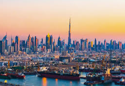

Iniciamos nuestras actividades como agencia de viajes en Argentina el año 2001.
Somos una empresa nacional filial perteneciente al holding SKR BY CORDOBA VIAJES S.R.L.
e incorporada a la Asociacion Internacional de Transporte Aereo IATA,
con agencias propias en Chile, Peru y Colombia.
Viajes "El Paisaje" se ha destacado en el mercado por su perfil innovador y su preocupacion constante
por entregar un servicio de primera clase, que logra equilibrar calidad, precio y formas de pago.
Viaje a Dubái
Dubai es
considerado uno de los siete Emiratos que integran los Emiratos arabes
Unidos. Esta ubicado a orillas del golfo Persico, en el impactante desierto de Arabia y limita al noreste con
la ciudad de Sharjah y al Sur con Abu Dhabi.
El destino Dubai, es popularmente reconocida por ser la ciudad del planeta que ha tenido el mayor crecimiento
de la decada. Es un lugar de gran lujo, elegido cada dia por los turistas de todo el mundo.
Cuenta con un gran numero de sitios de interes y lugares que no pueden dejar de visitar si deciden viajar a
esta este Emirato.
Cualquier motivo es bueno para visitar este Emirato, por su constante crecimiento que merece ser visitado.
La cultura arabe, la oferta de diversion para todo tipo de edades, la gastronomia entre otras razones han
logrado que Dubai se convierta en uno de los destinos mas concurridos de todo el mundo.
Viaje a Brasil
Rio de Janeiro
es una enorme ciudad costera de Brasil, famosa por sus
playas de Copacabana e Ipanema, la estatua del Cristo Redentor de 38 m de alto sobre
el cerro del Corcovado y el morro Pan de Azucar, una cima de granito con telefericos
que ascienden a su cima. La ciudad tambien es conocida por sus extensas favelas.
El estridente festival del Carnaval, con desfiles de carros alegoricos,
extravagantes disfraces y bailarines de samba, es considerado el mas grande del mundo.
Las actividades deportivas incluyen el voleibol en la playa de Ipanema, el surf en
Arpoador y el parapente desde el alto mirador Pedra Bonita. Las playas de arena se
extienden desde la bahia de Guanabara hasta Barra en el oeste; todas ellas incluyen
pistas de ciclismo y quioscos que venden agua de coco. El Parque Nacional de la Tijuca
tiene montañas cubiertas de bosques tropicales llenas de cascadas, senderos de excursion
y tucanes. Bandas de samba y bossa nova se presentan en los bares del area de Lapa.
En el Museo de Arte Moderno y el Museu de Arte do Rio, se exhibe arte moderno.
Rio fue la sede de los Juegos Olimpicos de 2016 y alberga el iconico Estadio Maracana.
Viaje a Francía
Francía,
en Europa Occidental, abarca ciudades medievales, villas alpinas y playas mediterráneas.
París, su capital, es famosa por sus firmas de alta costura, los museos de arte clásico,
como el Louvre, y monumentos como la Torre Eiffel. El país también es reconocido por sus
vinos y su gastronomía sofisticada. Los dibujos de la antigua cueva de Lascaux, el teatro
romano de Lyon y el imponente Palacio de Versalles dan fe de su rica historia. Una de las
principales razones para viajar a París> es contemplar su monumento más emblemático: la
Torre Eiffel. Subir por el interior de esta torre hasta cualquiera de sus pisos es todo
un espectáculo. Además, las vistas que ofrece son increíbles. el número de visitantes
internacionales a París en 2017 ascendió a 33.8 millones de turistas en total. Esta es
una excelente noticia, ya que tuvo un aumento de 9.9 por ciento. La tasa media de ocupación
de los hoteles fue del 73,2%.
 Francía,
en Europa Occidental, abarca ciudades medievales, villas alpinas y playas mediterráneas.
París, su capital, es famosa por sus firmas de alta costura, los museos de arte clásico,
como el Louvre, y monumentos como la Torre Eiffel. El país también es reconocido por sus
vinos y su gastronomía sofisticada. Los dibujos de la antigua cueva de Lascaux, el teatro
romano de Lyon y el imponente Palacio de Versalles dan fe de su rica historia. Una de las
principales razones para viajar a París> es contemplar su monumento más emblemático: la
Torre Eiffel. Subir por el interior de esta torre hasta cualquiera de sus pisos es todo
un espectáculo. Además, las vistas que ofrece son increíbles. el número de visitantes
internacionales a París en 2017 ascendió a 33.8 millones de turistas en total. Esta es
una excelente noticia, ya que tuvo un aumento de 9.9 por ciento. La tasa media de ocupación
de los hoteles fue del 73,2%.
Francía,
en Europa Occidental, abarca ciudades medievales, villas alpinas y playas mediterráneas.
París, su capital, es famosa por sus firmas de alta costura, los museos de arte clásico,
como el Louvre, y monumentos como la Torre Eiffel. El país también es reconocido por sus
vinos y su gastronomía sofisticada. Los dibujos de la antigua cueva de Lascaux, el teatro
romano de Lyon y el imponente Palacio de Versalles dan fe de su rica historia. Una de las
principales razones para viajar a París> es contemplar su monumento más emblemático: la
Torre Eiffel. Subir por el interior de esta torre hasta cualquiera de sus pisos es todo
un espectáculo. Además, las vistas que ofrece son increíbles. el número de visitantes
internacionales a París en 2017 ascendió a 33.8 millones de turistas en total. Esta es
una excelente noticia, ya que tuvo un aumento de 9.9 por ciento. La tasa media de ocupación
de los hoteles fue del 73,2%.